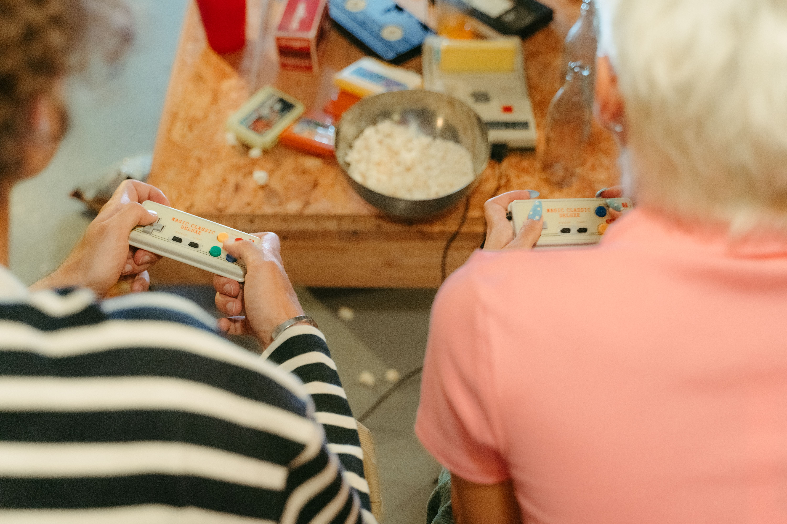
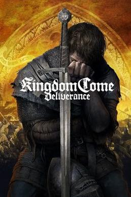
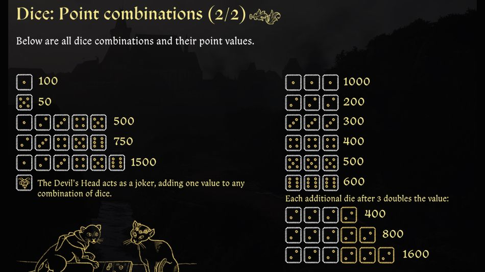

Project 2: TCP Gaming Server
Teamed up with two colleagues to build a multiplayer game server in Java using TCP threaded connections, supporting Crazy Eights, Farkle, and Trivia.
Building a New Connection

During the Fall and Winter of 2022, the question that lingered for this course's class was how we could demonstrate our ability to utilize data communications in software. In the group of 3 I was assigned into, we pondered constantly what we would do. I floated the idea of a library on a local server that would store public domain books that could be borrowed from other computers, but it came off as unoriginal. But ultimately we made the decision to create a game server. And why not? We were all gamers since a young age, a multiplayer gaming server would help pique interest. But the next question was what were the games we were going to include in said server.
The throw of the dice
We all agreed on using a TCP connection format instead of UDP. Said format is simpler to program and comprehend for people new to this type of matter. One team member decided to code multiplayer trivia, another decided to program the card game crazy eights, but I had the idea of an old dice game called farkle.

Kingdom Come is a famous rpg published by the Czech developer WarHorse studios. There is a beloved dice gambling minigame named Farkle in which two play to win a certain number of points first. Players can roll a group of dice to find combinations to pick out to earn points. When there are no more dice, you can roll another batch of dice. If you decide to end your turn, your points are added to the total. If you cannot find any combinations in your dice, you lose all points for your turn, and now it is your opponent's turn to roll.

Assembling the Pieces

With this conclusion, we delineated our roles in a decentralized fashion. My role was assembling a farkle demo code that could be configured with the TCP code my crazy eights companion would create. And thankfully, I already had worked on a dice game in the past. I could copy snippets that could be useful, and assembled a farkle demo between several players. Then I configured this code in order to make it functional, through the stereotypical client-server model. Then I troubleshooted and tinkered with the TCP code to ensure it functioned properly and combat potential bugs. This culminated in a final presentation demonstrating our server to the public. Unfortunately I can't display the full project due to a privacy agreement.